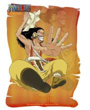

乌索普
年龄：17岁→19岁
生日：4月1日
血型：S型
身份：乌索普海贼团船长→草帽一伙狙击手
故乡：东海▪西罗普村
身高：174cm→176cm
喜欢的食物：秋岛的秋刀鱼，旺季的鱼类
爱好：发明各种东西、制造武器
梦想：成为勇敢的海上战士。
武器：弹弓“银河小弹珠”→巨型弹弓“兜”→弹弓“黑兜”/“成长黑兜”
悬赏：3千万（在司法岛事件中以“狙击王”的身份）→2亿（德雷斯罗萨篇）
特征为头戴狙击防风镜、浅啡色头巾，长鼻子。先前武器为弹弓“银河小弹珠”，
后武器为提高了攻击性和准确度的独角仙弹弓，并用空岛的各种贝进行了强化。
两年后武器为弹弓“黑兜”，并发射产自波音列岛的植物种子POP GREEN。
小时候是出名的吹牛大王，和村里的几个孩子组成“乌索普海贼团”，
自称乌索普船长。发现克洛船长的阴谋后，立志要保护村里的人，
和路飞并肩作战。梦想是要成为勇敢的海上战士。
